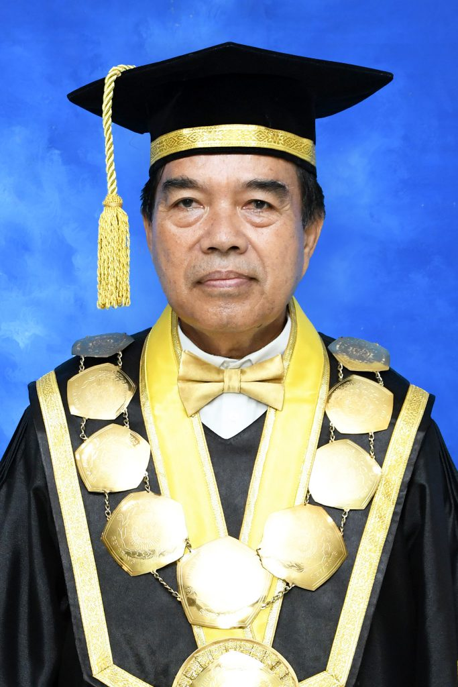

Tentang MLC UNIMUS
MLC (Muhammadiyah Language Center) UNIMUS adalah Unit Pelaksana Teknis dan Pusat Layanan Bahasa yang beroperasi di bawah Universitas Muhammadiyah Semarang. Unit ini berfokus pada pengembangan kemampuan bahasa, penyelenggaraan tes, pelatihan, serta layanan pendukung kebutuhan akademik kampus.
MLC UNIMUS melayani mahasiswa, dosen, tenaga kependidikan, dan mitra institusi melalui program yang terukur, profesional, dan relevan dengan standar akademik perguruan tinggi.
Visi dan Misi MLC UNIMUS
Visi
Menjadi pusat layanan bahasa terdepan yang kompetitif, kreatif, dan berkemajuan bagi sivitas akademika dan masyarakat.
Misi
- Menyelenggarakan kursus bahasa Inggris dan Arab sesuai kebutuhan masyarakat.
- Menyelenggarakan jasa terjemahan bahasa Inggris dan Arab.
- Menyelenggarakan tes kompetensi bahasa.
- Menyediakan jasa konsultan kebahasaan.
- Menyelenggarakan Bahasa Indonesia bagi Penutur Asing (BIPA).
Tujuan MLC UNIMUS
Tujuan umum dan tujuan khusus Muhammadiyah Language Center UNIMUS.
Tujuan Umum
Menciptakan layanan kebahasaan yang prima untuk menghadapi tantangan globalisasi.
Internasionalisasi Kampus
Mengembangkan program kebahasaan untuk memfasilitasi internasionalisasi kampus UNIMUS.
Layanan Terstandarisasi
Menjadi penyedia layanan kursus dan tes yang terstandarisasi internasional melalui kerja sama dengan penyedia tes internasional.
SDM Profesional
Memiliki pengajar dan penerjemah yang handal dan tersertifikasi.
Pengembangan BIPA
Mengembangkan layanan Bahasa Indonesia bagi Penutur Asing (BIPA).
Struktur Organisasi
Struktur organisasi UPT Bahasa Asing “Muhammadiyah Language Center” Universitas Muhammadiyah Semarang.

Prof. Dr. H. Masrukhi, M.Pd.
Rektor UNIMUS
Prof. Dr. Budi Santosa, M.Si., Med
Wakil Rektor I Bidang Akademik
Dr. Diana Hardiyanti, M.Hum.
Kepala UPT Bahasa Asing / MLC UNIMUS

Nama Koordinator Penjaminan Mutu
Divisi Penjaminan Mutu

Nama Koordinator Bahasa Asing
Divisi Bahasa Asing

Nama Koordinator BIPA
Divisi Bahasa Indonesia bagi Penutur Asing

Nama Koordinator Translation dan Proofreading
Divisi Translation dan Proofreading

Nama Staf Tenaga Kependidikan
Staf Tenaga Kependidikan